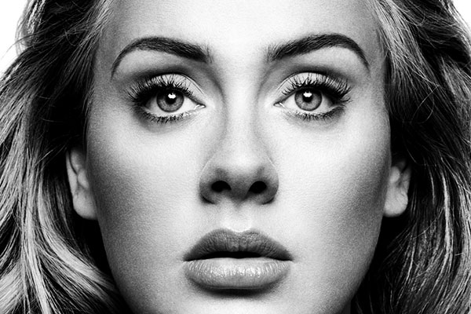
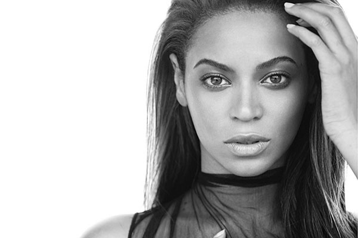

Bruno Mars is an American singer-songwriter, multi-instrumentalist, record producer, and choreographer. Born and raised in Honolulu, Hawaii, by a family of musicians, Mars began making music at a young age and performed in various musical venues in his hometown throughout his childhood.

Adele
2010
AAdele Laurie Blue Adkins MBE is an English singer-songwriter. After graduating from the BRIT School for Performing Arts and Technology in 2006, Adele was given a recording contract by XL Recordings after a friend posted her demo on Myspace the same year.
Usher
2004
Usher Raymond IV is an American singer, songwriter, dancer, and actor. Born in Dallas, Texas but raised and lived in Chattanooga, Tennessee until moving to Atlanta, Georgia. His mother put him in local singing competitions, before catching the attention of a music A&R from LaFace Records.

Beyoncé
2000
Beyoncé Giselle Knowles-Carter is an American singer, songwriter and actress. Born and raised in Houston, Texas, she performed in various singing and dancing competitions as a child and rose to fame in the late 1990s as lead singer of R&B girl-group Destiny's Child.